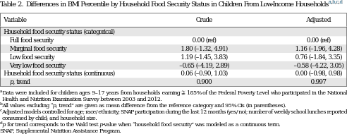

<?xml version="1.0" encoding="UTF-8"?>
<table title="table2" id="table2" class="tabcontent" xmlns="http://www.w3.org/1999/xhtml">
 <tr>
  <td>
   
   <p>corpus-oa-validation/10.1016_j.amepre.2016.09.009/tables/table2/table.svg.png</p>
  </td>
  <td>
   <table class="table">
    <caption/>
    <tr>
     <th class="cell">Variable </th>
     <th class="cell">Crude </th>
     <th class="cell">Adjusted </th>
    </tr>
    <tr>
     <td class="cell">Household food security status (categorical)</td>
     <td class="empty"/>
     <td class="empty"/>
    </tr>
    <tr>
     <td class="cell">Full food security</td>
     <td class="cell">0.00 (ref)</td>
     <td class="cell">0.00 (ref)</td>
    </tr>
    <tr>
     <td class="cell">Marginal food security</td>
     <td class="cell">1.80 (–1.32, 4.91)</td>
     <td class="cell">1.16 (–1.96, 4.28)</td>
    </tr>
    <tr>
     <td class="cell">Low food security</td>
     <td class="cell">1.19 (–1.45, 3.83)</td>
     <td class="cell">0.76 (–1.84, 3.35)</td>
    </tr>
    <tr>
     <td class="cell">Very low food security</td>
     <td class="cell">–0.65 (–4.19, 2.89)</td>
     <td class="cell">–0.58 (–4.22, 3.05)</td>
    </tr>
    <tr>
     <td class="cell">Household food security status (continuous)</td>
     <td class="cell">0.06 (–0.90, 1.03)</td>
     <td class="cell">0.00 (–0.98, 0.98)</td>
    </tr>
    <tr>
     <td class="cell">p, trend</td>
     <td class="cell">0.900</td>
     <td class="cell">0.997</td>
    </tr>
   </table>
   <p>corpus-oa-validation/10.1016_j.amepre.2016.09.009/tables/table2/table.svg.html</p>
  </td>
 </tr>
</table>
